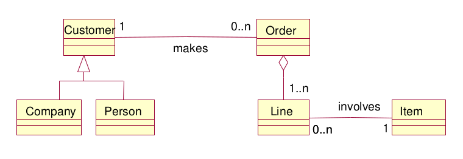
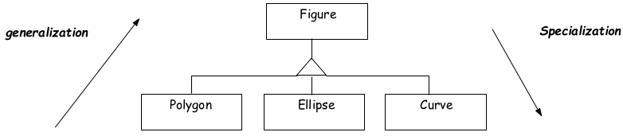
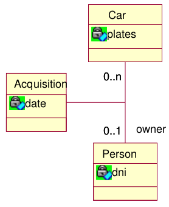
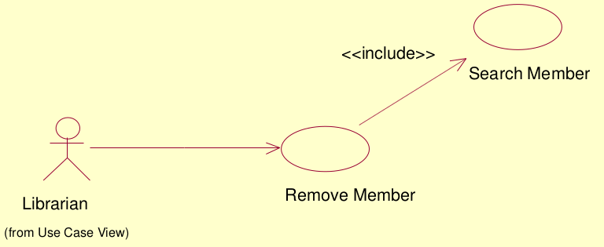

UML - Unified Modelling Language
Jest to uniwersalny język do modelowania systemów i nie tylko.
Istnieje wiele typów diagramów UML. Takie jak:
- Diagram klas - pozwala na łatwe opisanie systemów obiektowych
- Diagram komponentów - pokazuje fizyczne elementy systemu oraz interakcje między nimi
- Diagram stanów - opisuje stany obiektu i przejścia między nimi
- Diagram aktywności (czynności) - podobny do diagramu stanów, z tą różnicą, że opisuje wiele obiektów
- Diagram przypadków użycia (use case) - pokazuje aktorów oraz przypadki użycia systemu
- ...
Do pracy z diagramami UML można wykorzystać takie narzędzia jak:
- Draw.io - apka do rysowania róźnych diagramów
- mermaid - język do opisywania diagramów tekstowo (nie wszystkich)
- Wbudowane narzędzia (np. doxygen może wygenerować DIagram klas dla kodu C++, zaś Django potrafi wygenerować diagram ER dla opisywanych struktur danych, zaś DataBeaver potrafi wygenerować taki diagram dla bazy do której się podłączył)
Przydatne materiały:
- https://www.lucidchart.com/pages/pl/czym-jest-uml-unified-modeling-language
Diagram klas
Przedstawienie klas oraz zależności i relacji między nimi. Wikipedia

Poszczególne klasy mają wyróżnioną nazwę oraz atrybuty takie jak:
- metody (funkcje)
- właściwości
- pola (zmienne)
Możemy je pokazwać jako sama nazwa, opcjonalnie wzbogacona o typ, argumenty i inne cechy. Dozwolone są tylko typy bazowe (integer, real, char, string, etc.) bez klas.
Ogólnny schemat:
[visibility] Name [: Type] [=initial value]

Możemy także określać widoczność atrybutów
+dla public – publiczny, dostęp globalny#dla protected – chroniony, dostęp dla pochodnych klasy (wynikających z generalizacji)−dla private – prywatny, dostępny tylko w obrębie klasy (przy atrybucie statycznym) lub obiektu (przy atrybucie zwykłym)~dla package – pakiet, dostępny w obrębie danego pakietu, projektu.
Zależności pomiędzy klasami
Zależności pomiędzy poszczególnymi klasami opisujemy za pomocą związków (powiązań)

- Zależność (ang. dependency) – najsłabszy związek znaczeniowy między klasami, gdy jedna z klas używa innej. Na diagramie klas oznaczana
------->przerywaną linią zakończoną strzałką wskazującą kierunek zależności - Asocjacja (ang. association) wskazuje na silniejsze powiązanie pomiędzy obiektami danych klas (np. firma zatrudnia pracowników). Na diagramie asocjację oznacza się za pomocą linii. Nazwy cech (np. zatrudniony, zatrudniający) wraz z krotnością umieszcza się w punkcie docelowym asocjacji. Nazwę asocjacji podaje się pośrodku (np. zatrudnia).

- Generalizacja lub dziedziczenie - wypełniona strzałka wskazuje na klasę bazową względem pochodnej 
- Agregacja (ang. aggregation) reprezentuje związek typu całość-część, czyli jakaś większa całość jest rozbita na elementy. Oznacza to, że elementy częściowe mogą należeć do większej całości, jednak również mogą istnieć bez niej (np. koła i samochód).
- Kompozycja (ang. composition), jest silniejszą formą agregacji. W związku kompozycji, części należą tylko do jednej całości, a ich okres życia jest wspólny — razem z całością niszczone są również części. W dużej mierze jest to kwestia umowna, zależna od danego systemu.

W wypadku asocjacji możemy także określić krotność zależności
0brak instancji (rzadkie)0..1Zero albo jedna1,1..1dokładnie jedna0..*,*Zero albo więcej instancji1..*Jedna, albo więcej
Niektóre asocjacje same w sobie mogą być reprezentowane poprzez klasy. Np w wypadkach, gdy musza przechowywać więcej własnych danych.
Są to klasy asocjacyjne (Link classes)

// TODO UML, a obiekty (wykład 05 i 04 z LTP na UPV) oraz przykładowe analizy
Diagram przypadków użycia (Use case)
Jest on wykorzystywany do opisywania w jaki sposób powinien działać nasz system i jakie powinien posiadać funkcjonalności. Jest on bardzo pomocny przy definiowaniu wymagań funkcjonalnych.
Wyróżniamy na nich:
- aktorów - opisujące uczestników systemu oraz ich role. Aktorem osobowym może być osoba, zespół, dział, instytucja, organizacja, zrzeszenie organizacji lub organizacja wirtualna. Nazwy aktorów osobowych często pokryte są z nazwami funkcji jakie pełnią w organizacji, projekcie lub przedsięwzięciu bądź nazwą stanowiska jakie piastują. Natomiast aktorem bezosobowym może być system zewnętrzny (podsystemy, bazy danych), urządzenie lub czas (UWAGA Sam system nigdy nie jest aktorem)
- przypadki użycia - opisują ciągi akcji i ich warianty. Na ogół jeden przypadek użycia opisuje jedną funkcjonalność.
- związki - opisują relacje pomiędzy elementami

//TODO opisać dokładniej relację między aktorami a przypadkami, np dlaczego kupujący i przedający mogą się łączyć z jendym przypadkiem o nazwi sprzedaj książkę.
Przypadki użycia
Poszczególne przypadki użycia częśto opisuje się także za pomocą tabelek.
| Use Case | |
|---|---|
| Actors | |
| Summary | |
| Preconditions | |
| Postconditions | |
| Includes | |
| Extends | |
| Inherits from | |
| Flow of events | |
| Actor | System |
Przykładowa wypełniona tabelka

Poszczególne przypadki użycia mogą wchodzić w związki nie tylko z aktorami, lecz także z innymi przypadkami użycia.
Relacja include - przypadek A zawiera przypadek B, kiedy każde wykonanie A wymaga, abyśmy wykonali także B.

Aby kogoś usunąć z bazy danych musimy go najpierw wyszukać.
Relacja extend - przypadek B rozszerza przypadek A, kiedy podczas wykonywania A w pewnych przypadkach możemy (ale nie musimy) wykonać B.

Możemy mieć także typową relację dziedziczenia. (podobnie jak u aktorów)

Opracowywanie diagramu
Podczas prac nad diagramem możemy przyjąć dwa sposoby podejścia do tematu.
- Top Down, czyli
Szukamy aktorów->Szukamy przypadków->Uszczegółaiwamy - Bottom up
Tworzymy scenariusze->Generalizujemy->Organizujemy wszystko w diagram
Podczas prac nad diagramem warto rozwazyć kto, dlaczego i jak będzie używać naszego systemu. Pomoże nam to znaleźć aktorów.
Każda grupa lub osoba może być znaleziona jednej z poniższych kategorii:
- Kto będzie używał systemu?
- Kto będzie instalował system?
- Kto będzie utrzymywał system?
- Kto wyłączy system?
- Jakie inne systemy będą się z nim komunikować?
- Kto otrzymuje informacje?
- Kto dostarcza informacji?
Jak już znajdziemy naszych aktorów warto się zastanowić nad ich przypadkami użycia. Warto tutaj zwrócić uwagę na pytania takie jak:
- Jakie zadania wymagane są od aktorów z systemu?
- Czy aktor będzie mógł tworzyć, przechowywać, zmieniać lub usuwać informacje z systemu?
- Czy aktor będzie informował system o zmianach zachodzących na zewnątrz?
- Czy każdy aktor będzie informowany o zmianach stanu systemu?
Diagram sekwencji
//TODO https://wolski.pro/diagramy-uml/diagram-sekwencji/ Jest on używany do opisu przepływu sterowania oraz interakcji pomiędzy obiektami w czasie. Opisuje on jakie akcje po sobie następują.
sequenceDiagram
Alice->>+John: Hello John, how are you?
Alice->>+John: John, can you hear me?
John-->>-Alice: Hi Alice, I can hear you!
John-->>-Alice: I feel great!Diagram aktywności
//TODO
Diagram stanów
//TODO
Diagram ER (Encji Relacji)
//TODO Jest to diagram używany do opisywania struktur przechowywanych w relacyjnych bazach danych.
erDiagram
User {
Int id PK
String username
Int serverId FK
}
Server {
Int id PK
String serverName
}
Server ||--o{ User : has